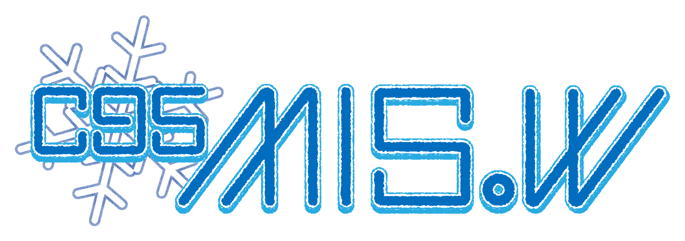

MIS.Wによる
2018年を締めくくるイベント
Information
サークル情報
早稲田大学経営情報学会(MIS.W)はデジタル創作を行っているサークルです。
コミックマーケット95、3日目では自作ゲーム･音楽CD･画集を頒布します。
場所は東パｰ23aとなっておりますので是非お越しください！
また、当日の情報などは＠misw_infoでご確認ください。

早稲田大学経営情報学会(MIS.W)はデジタル創作を行っているサークルです。
コミックマーケット95、3日目では自作ゲーム･音楽CD･画集を頒布します。
場所は東パｰ23aとなっておりますので是非お越しください！
また、当日の情報などは＠misw_infoでご確認ください。